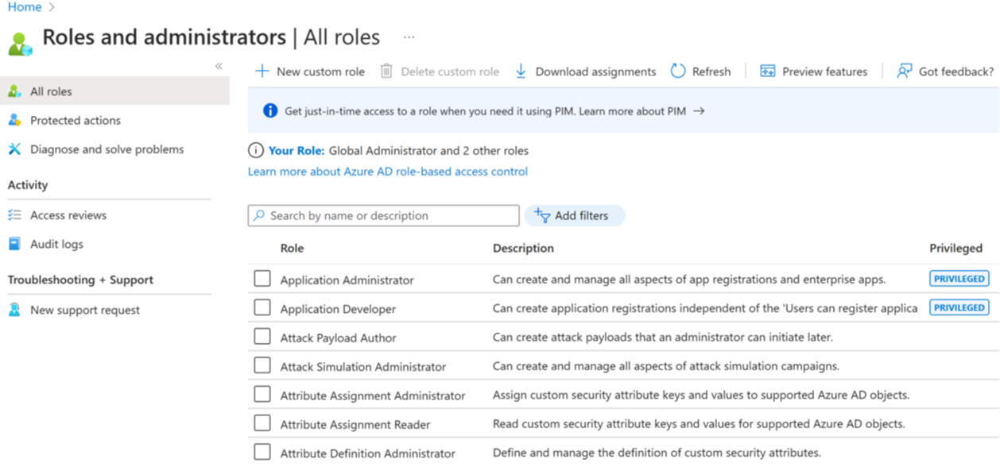
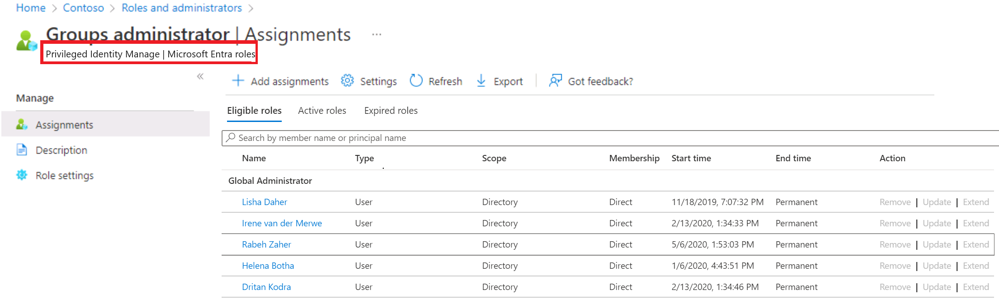
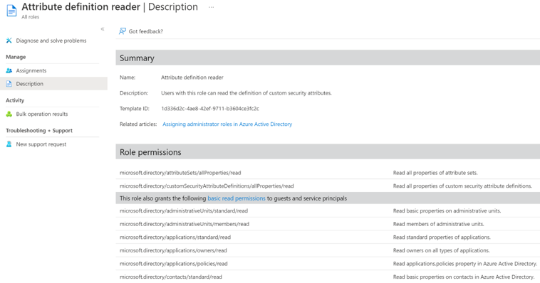
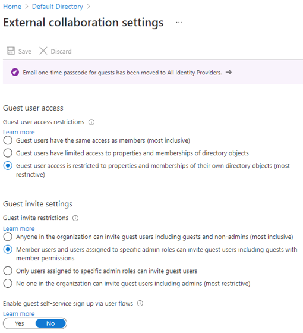
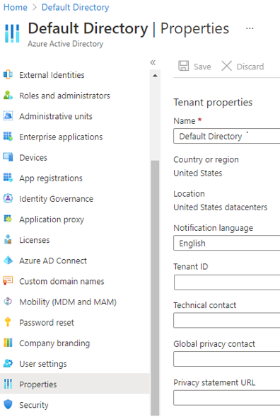

Configure Microsoft Entra ID
Company Brand
Adding custom brand requires Microsoft Entra ID premium P1, P2, or Office 365 (for Office 365 apps) license.

| Setting | Description |
|---|---|
| Language | The language is automatically set as your default and can't be changed. |
| Sign-in Page background image | Select a .png or .jpg image file for the background of your sign-in pages. The image is anchored to the center of the browser, and scales to the size of the viewable space. You can't select an image larger than 1920x1080 pixels in size or that has a file size more than 300,000 bytes. |
| Banner Logo | Select a .png or .jpg version of your logo to appear on the sign-in page after the user enters a username and on the My Apps portal page. |
| Username hint | Type the hint text that appears to users if they forget their username. This text must be Unicode, without links or code, and can't exceed 64 characters. If guests sign in to your app, we suggest not adding this hint. |
| Sign-in page text and formatting | Type the text that appears on the bottom of the sign-in page. You can use this text to communicate additional information, such as the phone number to your help desk or a legal statement. This text must be Unicode and not exceed 1,024 characters. |
Manage Entra Roles
Microsoft’s cloud-based identity and access management service, which helps your employee's sign-in and access resources in.
- External resources, such as Microsoft 365, the Azure portal, and thousands of other SaaS applications.
- Internal resources, such as apps on your corporate network and intranet, along with any cloud apps developed by your own organization.
Who uses Microsoft Entra ID
- IT admins: can use Microsoft Entra ID to control access to your apps and your app resources, based on your business requirements. For example, you can use Microsoft Entra ID to require multifactor authentication when accessing important organizational resources. Additionally, you can use Microsoft Entra ID to automate user provisioning between your existing Windows Server AD and your cloud apps, including Microsoft 365. Finally, Microsoft Entra ID gives you powerful tools to automatically help protect user identities and credentials and to meet your access governance requirements.
- App Developer: can use Microsoft Entra ID as a standards-based approach for adding single sign-on (SSO) to your app, allowing it to work with a user's preexisting credentials. Microsoft Entra ID also provides APIs that can help you build personalized app experiences using existing organizational data.
- Microsoft 365, Office 365, Azure, or Dynamics CRM Online subscribers: Each Microsoft 365, Office 365, Azure, and Dynamics CRM Online tenant is automatically a Microsoft Entra tenant. You can immediately start to manage access to your integrated cloud apps.
Microsoft Entra Roles

- Global Administrator Role permissions
- Manage access to all administrative features in Microsoft Entra ID, and services that federate to Microsoft Entra ID
- Assign administrator roles to others
- Reset the password for any user and all other administrators
- User Administrator Role permissions:
- Create and manage all aspects of users and groups
- Manage support tickets
- Monitor service health
- Change passwords for users, Helpdesk administrators, and other User Administrators
- Billing Administrator Permissions
- Make purchases
- Manage subscriptions
- Manage support tickets
- Monitors service health
| Azure Roles | Microsoft Entra Roles |
|---|---|
| Manage access to Azure resources | Manage access to Microsoft Entra resources |
| Supports custom roles | Supports custom roles |
| Scope can be specified at multiple levels (management group, subscription, resource group, resource) | Scope is at the tenant level or can be applied to an Administrative Unit |
| Role information can be accessed in Azure portal, Azure CLI, Azure PowerShell, Azure Resource Manager templates, REST API | Role information can be accessed in Azure admin portal, Microsoft 365 admin center, Microsoft Graph, and PowerShell |
Azure roles and Microsoft Entra roles don't span Azure and Microsoft Entra ID. However, if a Global Administrator elevates their access by choosing the Access management for Azure resources switch in the Azure portal, they're granted the User Access Administrator role (an Azure role) on all subscriptions for a particular tenant. The User Access Administrator role enables the user to grant other users access to Azure resources. This switch can be helpful to regain access to a subscription.
Assign Roles
- Assign a role to a user or group
- Microsoft Entra ID -> Roles and administration -> Select a role -> + Add Assignment
- Microsoft Entra ID -> Select user -> Assined roles -> Add assignments
- Remove role assignment
- Microsoft Entra ID -> Select user -> Assigned Roles -> Remove the assignment
- Create a new role
- Microsoft Entra ID -> Roles and administration -> New custom role
- Provide name and description in Basics tab
- Choose permissions for the role
- microsoft.directory/applications/credentials/update: Manage credential properties of app registrations
- microsoft.directory/applications/basic/update: Manage basic properties of app registrations
- Assign a user or group to a role
- Microsoft Entra ID -> Open Users (or Groups) -> Select an User (or group) -> Assigned roles -> + Add Assignment
- Assign a role to a broad-scope, like a Subscription, Resource Group, or Management Group
- Done via the Access control (IAM) within each settings screen
- Assign a role using PowerShell or Microsoft Graph API
- Assign a role using Privileged Identity Management (PIM)
- If you have a Microsoft Entra ID Premium P2 license plan and already use PIM, all role management tasks are performed in the Privileged Identity Management experience. This feature is currently limited to assigning only one role at a time. You can't currently select multiple roles and assign them to a user all at once.

Administrative Unit
- Admin roles for Administrative Unit
- Authentication administrator
- Helpdesk administrator
- License administrator
- Password administrator
- User administrator
Plan your Administrative Unit
- Initial adoption: Your organization will start creating administrative units based on initial criteria, and the number of administrative units will increase as the criteria are refined.
- Pruning: After the criteria are defined, administrative units that are no longer required will be deleted.
- Stabilization: Your organizational structure is defined, and the number of administrative units isn't going to change significantly in the short term.
Delegate Administration in Entra ID
- Restricting who can create applications and manage the applications they create. By default in Microsoft Entra ID, all users can register application registrations and manage all aspects of applications they create. You can restrict to only allow selected people that permission.
- Assigning one or more owners to an application. A simple way to grant someone the ability to manage all aspects of Microsoft Entra ID configuration for a specific application.
- Assigning a built-in administrative role that grants access to manage configuration in Microsoft Entra ID for all applications. The recommended way to grant IT experts access to manage broad application configuration permissions without granting access to manage other parts of Microsoft Entra ID not related to application configuration.
- Create a custom role to define specific permissions. Then assign the role to a user to assign a limited-owner. Or you could assign at the directory scope - all applications - as a limited-administrator.
Delegation Plan
- Define the roles you need
- Delegate app administration
- Grant the ability to register applications
- Delegate app ownership
- Develop a security plan
- Establish emergency accounts
- Secure your administrator roles
- Make privileged elevation temporary
Define Roles
- Tasks that you do routinely, have limited risk, and are trivial to complete are excellent candidates for delegation.
- Tasks that you do rarely but have potential risk across the organization and require high skill levels should be considered carefully before delegating. Instead, you can temporarily elevate an account to the required role or reassign the task.
Delegate App Administrator
- Application Administrator: grants the ability to manage all applications in the directory, including registrations, single sign-on settings, user and group assignments and licensing, Application Proxy settings, and consent. It doesn't grant the ability to manage Conditional Access.
- Cloud Application Administrator: grants all the abilities of the Application Administrator, except it doesn't grant access to Application Proxy settings.
Delegate App Ownership
- Enterprise Application Owner: grants the ability to manage the ‘enterprise applications that the user owns, including single sign-on settings, user and group assignments, and adding more owners. It doesn't grant the ability to manage Application Proxy settings or Conditional Access.
- Application Registration Owner: grants the ability to manage application registrations for app that the user owns, including the application manifest and adding other owners.
Default permissions

User Settings and Roles and Administrations
- Member Users
- Enumerate list of users and their contacts
- Invite guest users
- Can create Security and Microsoft 365 Groups
- Register new applications
- Gust Users
- Read own properties
- Invite guest users
- Can search for non-hidden groups by name
- Read properties of registered and enterprise applications
Set Primary Domain
- Sign in Azure Portal with administrator account -> Select Microsoft Entra ID -> Select Custom Domain Names -> Select name of domain to be primary domain -> Make Primary ->I
900 domains in cloud and 450 domains on-premises
Delete Custom Domain
- Can't delete if the following:
- Any user has a user name, email address, or proxy address that includes the domain name.
- Any group has an email address or proxy address that includes the domain name.
- Any application in your Microsoft Entra ID has an app ID URI that includes the domain name.
- ForceDelete Option
- Only delete if the following aren't true:
- You purchased a domain via Microsoft 365 domain subscription services
- You're a partner administering on behalf of another customer organization
- Actions performed:
- Renames the UPN, EmailAddress, and ProxyAddress of users with references to the custom domain name to the initial default domain name.
- Renames the EmailAddress of groups with references to the custom domain name to the initial default domain name.
- Renames the identifierUris of applications with references to the custom domain name to the initial default domain name.
- Error
- The number of objects to be renamed is greater than 1000
- One of the applications to be renamed is a multitenant app
Member vs Guest User
- Member users: register applications, manage their own profile photo and mobile phone number, change their own password, and invite B2B guests. In addition, users can read all directory information (with a few exceptions).
- Guest users: have restricted directory permissions. They can manage their own profile, change their own password, and retrieve some information about other users, groups, and apps; however, they can't read all directory information. For example, guest users can't enumerate the list of all users, groups, and other directory objects. Guests can be added to administrator roles, which grant them full read and write permissions contained in the role. Guests can also invite other guests.
User permissions
- Users can register application
- By default, member users can register applications.
- Setting this option to No prevents users from creating application registrations. The ability can then be granted back to specific individuals by adding them to the Application Developer role.
- Restrict access to Microsoft Entra administration portal
- Setting this option to No lets non-administrators use the Microsoft Entra administration portal to read and manage Microsoft Entra resources. Yes restricts all non-administrators from accessing any Microsoft Entra data in the administration portal.
- This setting doesn't restrict access to Microsoft Entra data using PowerShell or other clients such as Visual Studio. When set to Yes, to grant a specific non-admin user the ability to use the Microsoft Entra administration portal assign any administrative role such as the Directory Readers role.
- This role allows reading basic directory information, which member users have by default (guests and service principals don't).
Sign in Linkedin
- Reduce friction and obtain more sign-ups by allowing members to Sign In with LinkedIn, without having the need to create a new account.
- Minimize the costs and time associated with implementing your own sign-in, identity, profile management, and password management.
- Personalize your sites and applications with the latest member profiles.
Manage Security defaults
- Requiring all users to register for multifactor authentication (MFA).
- Requiring administrators to perform multifactor authentication.
- Blocking legacy authentication protocols.
- Requiring users to perform multifactor authentication when necessary.
- Protecting privileged activities like access to the Azure portal.
Configure external user properties

- Guest user access: Guest users can be given rights to where they operate almost as a full user, to restriction where they can only look at their own content.
- Guest invite settings: Who can invite guests to join the organization; from guest themselves to only admins.
- Guest self-service up: Allow guest to partake in self-service options for users.
Configure tenant properties

- Name: friendly name for your tenant, for use in the Azure portal
- Country or region: location of your primary company and the Azure datacenters being used
- Notification language: language used for sending notifications and alerts
- Tenant ID: unique identifier for your tenant, used programatically
- Technical contact: primary contact for the tenant (defaults to the user who created the tenant)
- Global privacy contact: user or alias to contact for privacy concerns or issues
- Privacy statement URL: link to a PDF or webpage containing the privacy rules for your cloud solutions
Setting tenant wide properties
- Change tenant display name
- Azure Portal -> Show portal Menu Hamburger button -> properties -> name box change tenant name -> save properties
- Find Country/region
- Microsoft Entra ID -> Properties -> Tenant Properties -> country/region location
- Find tenant location
- Properties -> Tenant Properties -> location
- Find tenant ID
- Microsoft Entra ID -> Manage Section -> Properties -> Under tenant properties -> tenant ID
- Change technical contact, add privacy info, global privacy contact, and privacy statement URL
- Microsoft Entra ID -> properties
- Technical contact: Type the email address for the person to contact for technical support within your organization.
- Global privacy contact: Type the email address for the person to contact for inquiries about personal data privacy. This person is also who Microsoft contacts if there's a data breach. If there's no person listed here, Microsoft contacts the administrator who owns the tenant.
- Privacy statement URL: Type the link to your organization's document that describes how your organization handles both internal and external guest's data privacy.